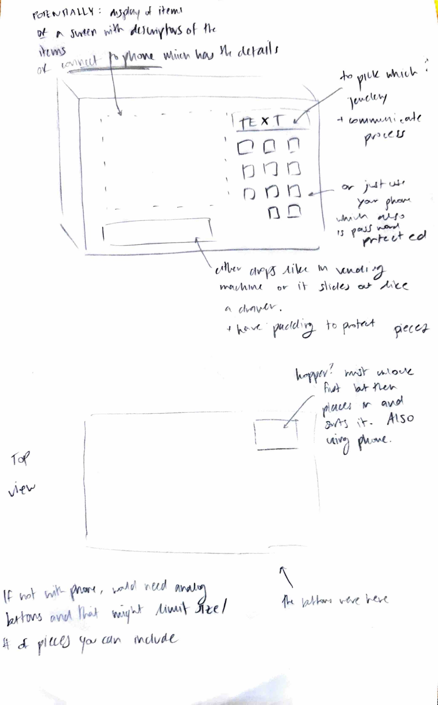

<div class="textcontainer">
<br></br>
<h3>Week 1: Final Project Proposal</h3>
<p class = "margin"></p>
Here are at most 3 ideas for my final project
<p class = "margin"></p>
<h4>Idea 1 : Safe x vending machine for your jewelery</h4>
<p class = "margin"></p>
A safe/box that contains your jewelery but that also works as a vending machine.
I'm considering two ways to do this: analog with buttons OR you use an app to control the box (for even more security?).
You require a passcode to be able to access what's inside. Once you unlock it, it doesn't open fully, but rather there are buttons or some screen with options of which jewelery to select to release.
For example, a screen where you can select your red ring and then it will release through a small opening at the bottom. It might be like how it's done in vending machines or it'll be like an extracted drawer.
To return the jewelery, you also don't want to have to open the entire thing so I was thinking we'd use a hopper that directs the jewelery to the correct spot.
Again, either through buttons (which would limit space and amount you could use this for) or potentially some button like (most recently taken out) which would be convenient.
This is useful for people who want to keep their jewelery safe because it is never fully open to all of your jewelry at once, but also organized and easy to access. I had a klepto roommate so this is applicable!
At a large scale this could be more convenient and secure than having to open and close a safe everytime and take out all your jewelry.
There can be additional failsafes like 3 tries and you're locked out for 10 minutes. If we can't use a screen, then the buttons should have a way to conveniently label the jewelery you want.
For now, it would make sense to keep this to smaller jewelery like rings or earrings.
<p> <p></p>
</p>
<p class = "margin"></p>
<h4>Idea 2: Orange peeler</h4>
<p class = "margin"></p>
Isn't it so annoying when your hands get all juicy when you try to peel an orange? And you get the peel gunk stuck in your nails? I propose a spherical device in which you place your orange, the slicers come into it and once it touches the orange, it inserts itself by a centimeter (or two), slices (still figuring out what direction), and potentially also starts the peeling for you so that you don't have to dig in there to do it yourself.
<p class = "margin"></p>
</div>